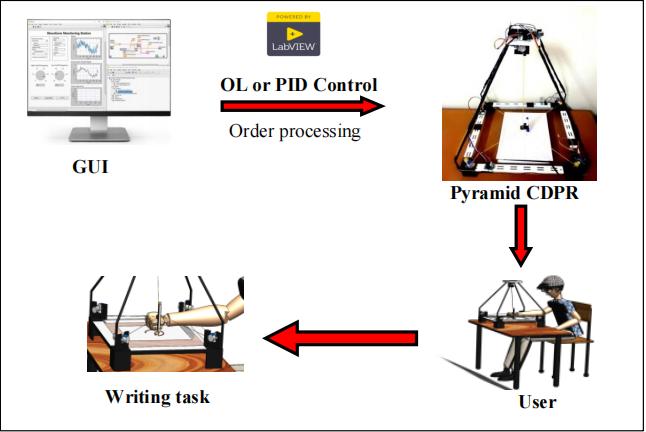
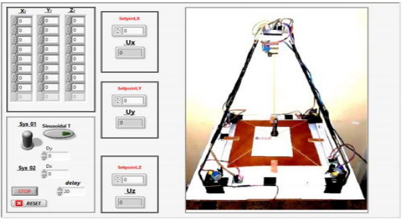
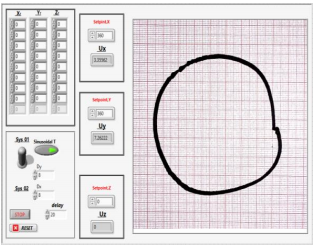

1. A Pyramidal Cable-Driven Robot for Rehabilitation
This research investigates the design and control of a pyramidal cable-driven parallel robot intended for writing and drawing exercises in rehabilitation. The work combines robotic structure design, modeling, and motion-control considerations.
Robot Images



Research Videos
Research demonstration 1
Research demonstration 2
Research demonstration 3